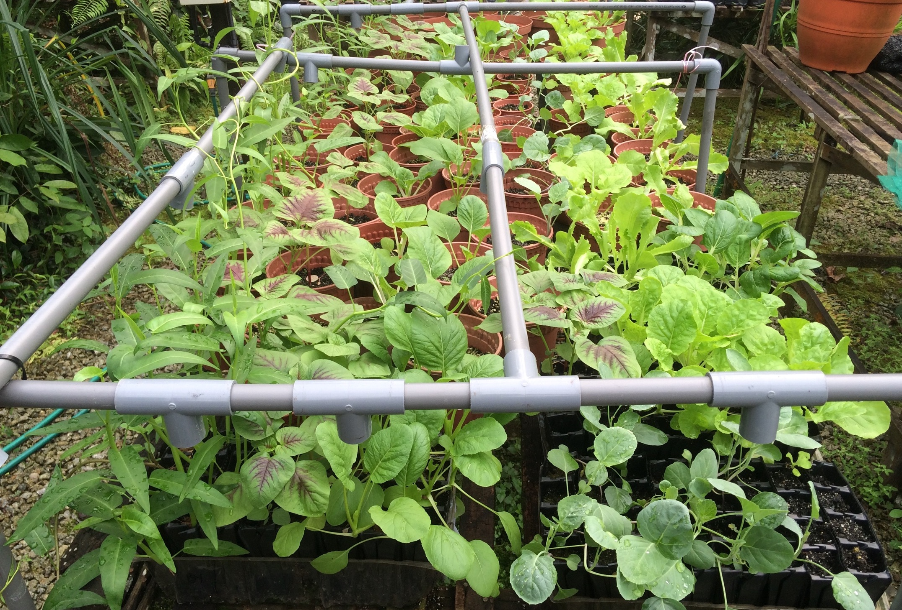
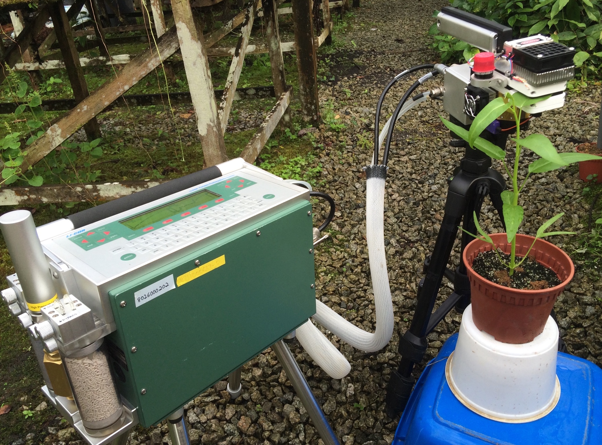
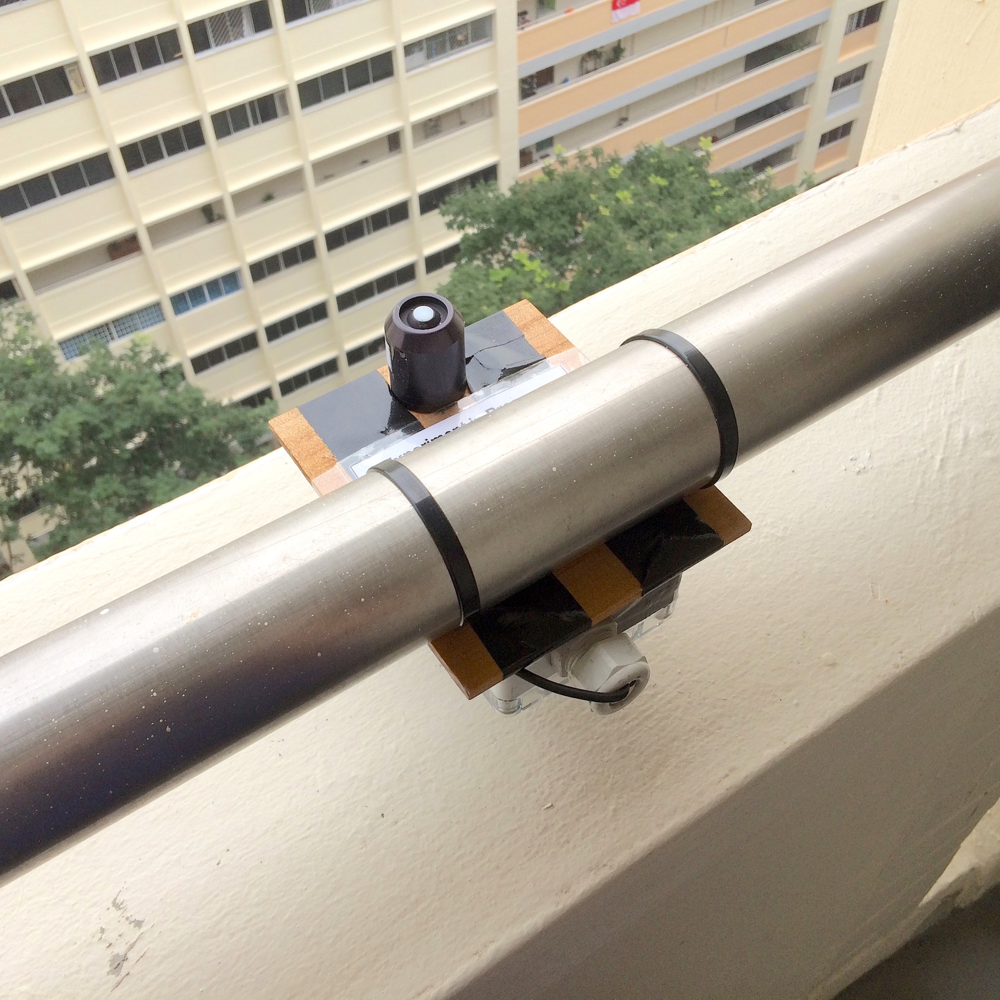
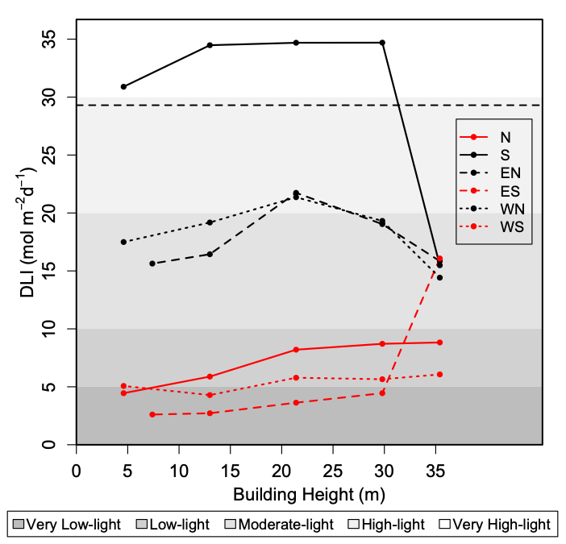
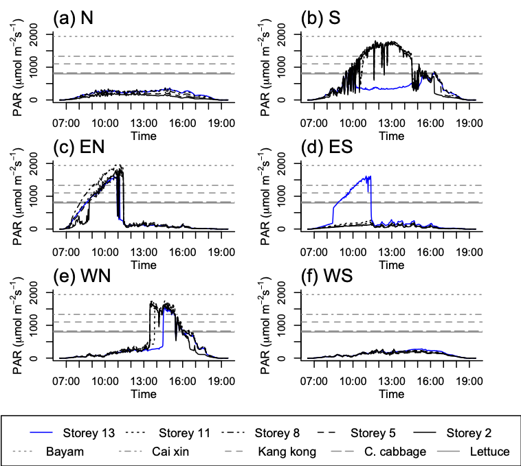

Food security is emerging as a serious threat in many parts of the world. In cities, common strategies to improve the resilience of food supplies are to diversify the sources of food, and to optimise local production. In compact cities where land is scarce, vertical and rooftop farming have been explored as alternatives to conventional agriculture. However, the success of such measures rely on their environmental, social and economic feasilibility within the local context.
My Honors Thesis assessed the suitability of light conditions along the vertical surfaces of buildings in Singapore, a dense and compact city in the tropics. These conditions were compared against the light requirements of vegetable crops that require high amounts of light, and that form a significant proportion of the staple diet in many Asian countries. Plant physiological variables such as dark respiration (Rd), light compensation point, light saturation point, photosynthetic capacity (Amax) and quantum yield (Φ) were derived. These were used to calculate plant light requirements, or the ‘Daily Light Integral’, which ranged from 10–30 mol m-2 day-1. Depending on the building height, orientation and configuration, light conditions along vertical surfaces ranged from 2–35 mol m-2 day-1.





References
Song, X. P., Tan, P. Y., Tan, H. T. W. (2018). Assessment of light adequacy for vertical farming in a tropical city. Urban Forestry & Urban Greening, 29, 49–57. https://doi.org/10.1016/j.ufug.2017.11.004
Citation
@article{x.p.2018,
author = {Song, X. P. and Tan, P. Y. and Tan, H. T. W.},
title = {Assessment of Light Adequacy for Vertical Farming in a
Tropical City},
journal = {Urban Forestry \& Urban Greening},
volume = {29},
pages = {49–57},
date = {2018},
url = {https://xp-song.github.io/posts/urban-agriculture},
doi = {10.1016/j.ufug.2017.11.004},
langid = {en}
}